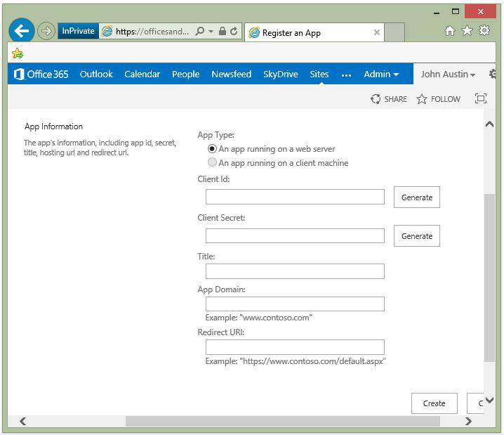
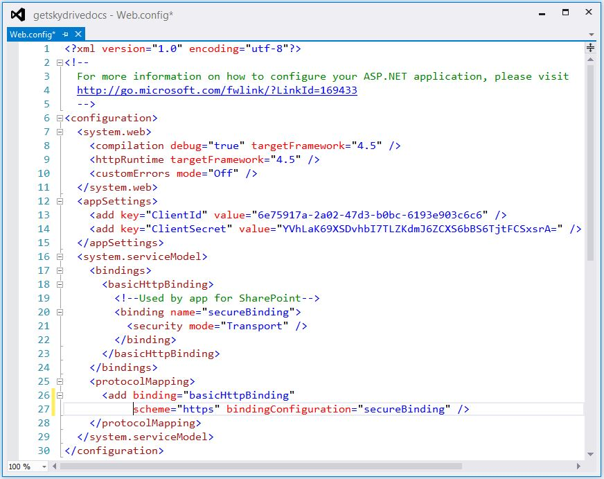
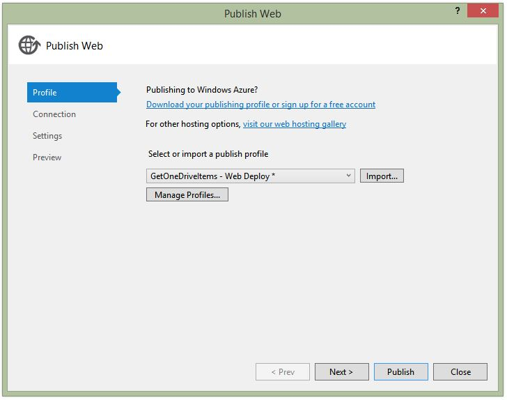
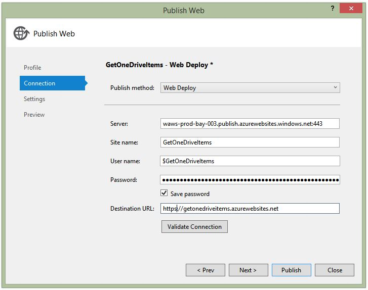
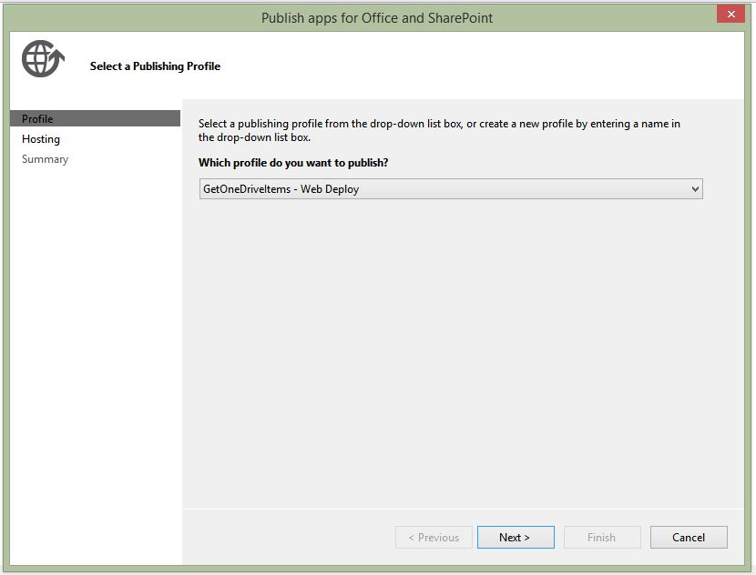
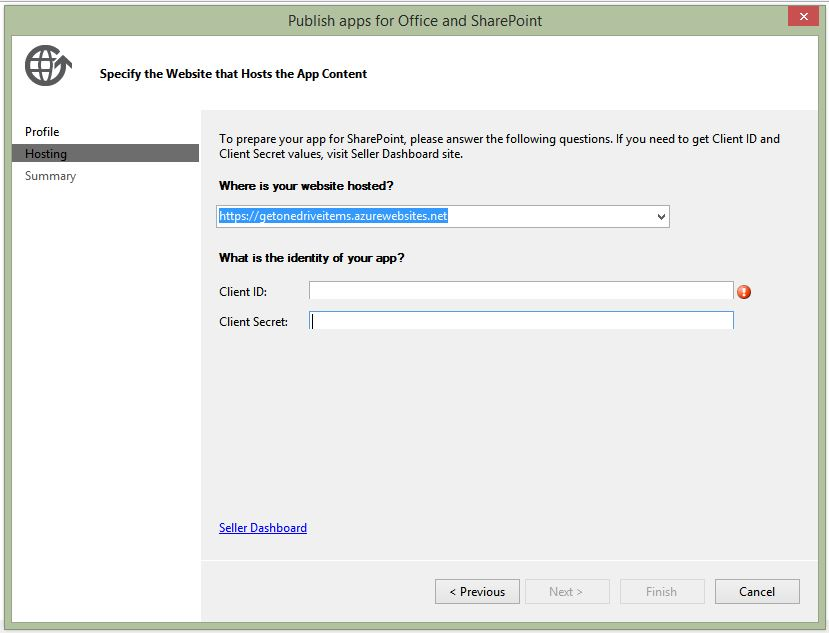
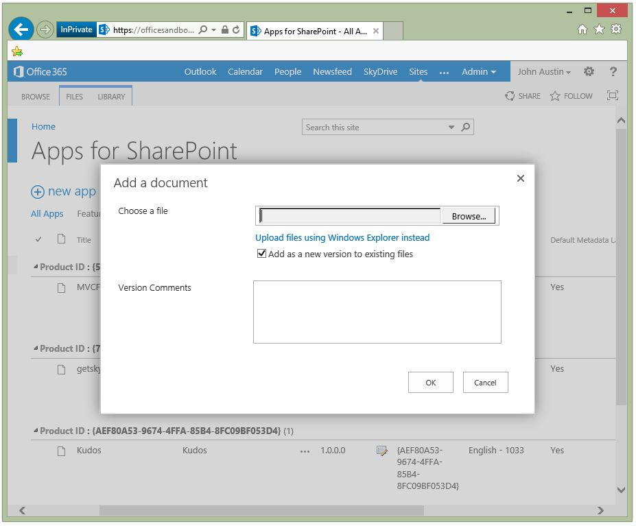
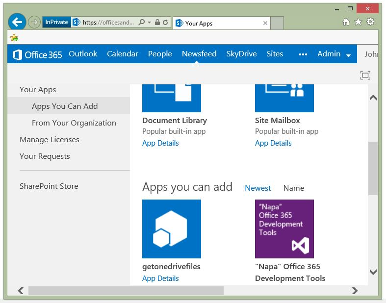
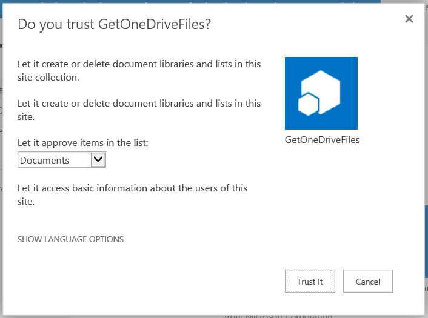

The project is organized into view (pages folder), view model (ViewModel folder), and model (DataModel folder). The code that uses the managed SharePoint APIs is in the OneDriveProDocs.cs file. The Scripts folder contains the ChromeLoader.js file for showing SP chrome on the UI.
The view model is composed of an Item class that describes an individual file from OneDrive Pro and an Items class that encapsulates an observable collection of Item that is consumed by the view layer. In the model layer, each OneDrive Pro folder is queried for contained files. The combined file collection is displayed in a web UI. The logic in this solution works with your OneDrive Pro site and your team site without any code change.
The UI logic instantiates the view model items class by calling the items constructor. The constructor calls the model _oneDriveModel.Run() method. Run connects to OneDrive Pro and gets the files and folders to fill the Items observable collection. A list on the UI is bound to the observable collection and fills when the collection fills.
Prerequisites
This sample requires the following:
-
Visual Studio 2012
-
Office Developer Tools for Visual Studio 2012
-
Either of the following:
-
SharePoint Server 2013 configured to host apps, and with a Developer Site Collection already created; or,
-
Access to an Office 365 developer site configured to host apps.
-
Key components of the sample
The sample app contains the following:
-
The getonedrivefilesWeb folder, which contains the web project and associated source files.
-
The getonedriveFilesWeb\DataModel folder, which contains OneDriveProDics.cs.
-
The getonedriveFilesWeb\ViewModel folder, which contains the source files for the view model classes.
All other files are automatically provided by the Visual Studio project template for apps for SharePoint, and they have not been modified in the development of this sample.
Configure the sample
Follow these steps to configure the sample.
-
Use the Windows Azure Management Portal to set up an Azure provider host web site. Copy the new domain URL to notepad. You will need to paste the URL into the App Domain field in the next step.
Figure 3: Create a new website in Azure

-
Use the Office 365 development site Appregnew.aspx page to register your SharePoint app with SharePoint. Copy the generated client Id and client secret values to notepad. Paste the domain URL into the App Domain field.
Figure 4. The SharePoint AppRegNew.aspx page.
 -
Set the Project Url property to the URL of the provider host domain in the Properties page of the web project.
Figure 7. Visual Studio, new project dialog

-
Update the SharePoint web app project Web.config file to hold the client ID and client secret values that you got when you register the SharePoint app.
Figure 8. Web app, web.config XML file

Deploy the sample to OneDrive Pro
Deployment of a new provider-hosted SharePoint app includes the following steps:
-
Download an Azure publish profile from the Azure management portal
-
In Visual Studio, publish the web app components to the Azure provider host web
-
In Visual Studio, publish the SharePoint component of the app solution to the SharePoint app catalog
-
In your Office 365 OneDrive Pro site, deploy the app from the SharePoint catalog to a SharePoint site
Download a provider-host publish profile from Azure
After Azure creates the new web site and starts it, click the Publish your app link to download the web site publishing profile from Windows Azure Management Portal. The profile is the publication parameter source when the profile is imported into Visual Studio using the web app publication dialog.

Publish the remote web app to Azure
Now that you've configured both projects and registered the SharePoint app, you can publish the remote web app.
-
Open the project web publish dialog
Figure 11. Open publish dialog for web project

-
Import the publish settings that you downloaded from Azure
Figure 12. Import the Azure publishing profile
 -
Verify that the connection settings are correct by clicking the Validate Connection button.
Figure 13. Verify Azure publish profile attributes

Note: Be sure to change the web protocol in the provider host URL. Azure creates identical web sites for HTTP and HTTP secure (HTTPS). A provider hosted SharePoint web component must be hosted on an HTTPS site. -
Click the publish button and you'll know the web site is published when you see the following web page
Figure 14. Web app is published on Azure

Build the SharePoint app
Publishing the SharePoint app component of the solution is a two step process that includes:
-
Building the publishing app package
-
Uploading the app to the OneDrive Pro app catalog
-
To build the app, answer the prompts in the Visual Studio SharePoint project publish dialog.
Figure 15. SharePoint app project publish dialog - profile tab
 -
Use the client ID and client secret from SharePoint app registration to fill the prompts on the hosting tab.
Figure 16. SharePoint app project publish dialog - hosting tab

After you click Finish in the publication dialog, Visual Studio builds the app. -
Open the build output folder on your development computer
Figure 17. App build output folder

Publish the app to the OneDrive Pro app catalog
Sign in to your Office 365 developer site and go to the Team site. To add the new app to the OneDrive Pro app catalog, open the catalog using the following steps:
-
From the team site, click OneDrive in the SharePoint navigation ribbon.
-
Click on the Admin link in the nav. ribbon and then click the SharePoint menu item
-
Click apps from the list on the left side of the SharePoint admin center page
-
Click App catalog under apps.
You can distribute both SharePoint apps and Office apps from the OneDrive Pro app catalog. To distribute your SharePoint app, click Distribute apps for SharePoint to open the SharePoint app list.
Click new app to open the Add a document dialog. You can also drag the app file from the build output folder onto the Apps for SharePoint page and drop the app in the list on the page.

After you have chosen your app from the dialog or dragged the app onto the page, SharePoint uploads your app file and then adds it to the list. Once SharePoint has finished adding it to the list, a user can deploy your app.
Deploy the SharePoint app to your OneDrive Pro site
Now that you have added your app to the SharePoint app catalog, a user can deploy it to their OneDrive Pro site or their team site. The following procedure deploys a an app to a user's OneDrivePro site.
-
Click the Site Contents link on the left column of the page
-
Click add an app
Figure 19. OneDrive Pro site contents list

-
Click on the app you want to deploy
Figure 20. Choose the app to deploy
 -
Review the site action permissions that the app is requesting and then click Trust It if you want to grant the requested permissions.
Figure 21. App trust dialog

If you chose to trust the app then it is now deployed to your site and you can use it.
Run and test the sample
To run and test the sample, do the following:
-
Press F5 to run the app.
-
Sign in to your SharePoint Server 2013 Developer Site collection or Office 365 Developer Site if you are prompted to do so by the browser.
Change log
|
Version |
Date |
|---|---|
|
First version |
July 16, 2012 |